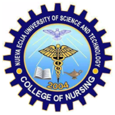

Nursing is a highly respected profession that plays a vital role in providing healthcare services to patients. Nurses are responsible for assisting patients in various medical settings, including hospitals, clinics, and other healthcare facilities. To become a qualified nurse, one must undergo proper training and education. This is where nursing courses come in. One of the best institutions that offer nursing courses in the Philippines is the Nueva Ecija University of Science and Technology (NEUST). NEUST is a government-run university that offers a variety of academic programs, including nursing. The university has a long-standing reputation for providing quality education to its students, particularly in the field of healthcare. The nursing program at NEUST is designed to prepare students to become competent and compassionate healthcare providers. The curriculum is carefully crafted to ensure that students receive a well-rounded education that covers all aspects of nursing, from anatomy and physiology to patient care and treatment.
Nursing is a highly respected profession that plays a vital role in providing healthcare services to patients. Nurses are responsible for assisting patients in various medical settings, including hospitals, clinics, and other healthcare facilities. To become a qualified nurse, one must undergo proper training and education. This is where nursing courses come in. One of the best institutions that offer nursing courses in the Philippines is the Nueva Ecija University of Science and Technology (NEUST). NEUST is a government-run university that offers a variety of academic programs, including nursing. The university has a long-standing reputation for providing quality education to its students, particularly in the field of healthcare. The nursing program at NEUST is designed to prepare students to become competent and compassionate healthcare providers. The curriculum is carefully crafted to ensure that students receive a well-rounded education that covers all aspects of nursing, from anatomy and physiology to patient care and treatment. One of the best things about NEUST's nursing program is its faculty. The faculty members are experienced professionals who are passionate about teaching and mentoring students. They bring a wealth of knowledge and expertise to the classroom, and they are committed to helping students succeed in their academic and professional careers. NEUST also has excellent facilities that provide students with hands-on training and experience. The university has a well-equipped nursing laboratory that simulates real-world healthcare scenarios. This laboratory provides students with the opportunity to practice their skills in a safe and controlled environment before they work with actual patients. Apart from the nursing laboratory, NEUST also has a fully functional hospital where students can complete their clinical rotations. This hospital is equipped with state-of-the-art medical equipment and technology, providing students with a comprehensive learning experience. NEUST's nursing program is also known for its strong emphasis on community service. The university encourages students to participate in various outreach programs, where they can apply their knowledge and skills to help underprivileged communities. This not only benefits the community but also helps students develop their sense of compassion and social responsibility. NEUST's nursing program is open to students who have completed their secondary education. To be admitted to the program, students must pass the NEUST College Admission Test and meet the university's admission requirements. The nursing program typically takes four years to complete, and students are required to take and pass the Philippine Nurse Licensure Examination before they can practice as registered nurses. NEUST's nursing program is accredited by the Philippine Commission on Higher Education (CHED) and the Philippine Nurses Association (PNA). This means that the program meets the highest standards of quality education and is recognized by professional organizations in the field of nursing.
Apart from the academic program, NEUST also offers various extracurricular activities for its nursing students. The university has a student organization called the Nursing Students Association, which provides students with opportunities to participate in various activities, such as seminars, workshops, and community outreach programs. NEUST's nursing program also provides students with the opportunity to join the university's varsity teams. The university has a strong sports program, and nursing students can participate in various sports, such as basketball, volleyball, and swimming.
In conclusion, NEUST's nursing program is an excellent choice for students who are interested in pursuing a career in healthcare. The program provides students with a well-rounded education that covers all aspects of nursing, from basic sciences to patient care and treatment. The faculty members are experienced professionals who are passionate about teaching and mentoring students, and the facilities are equipped with state-of-the-art equipment and technology. With NEUST's nursing program, students can be assured of a quality education that will prepare them for a fulfilling career in nursing.